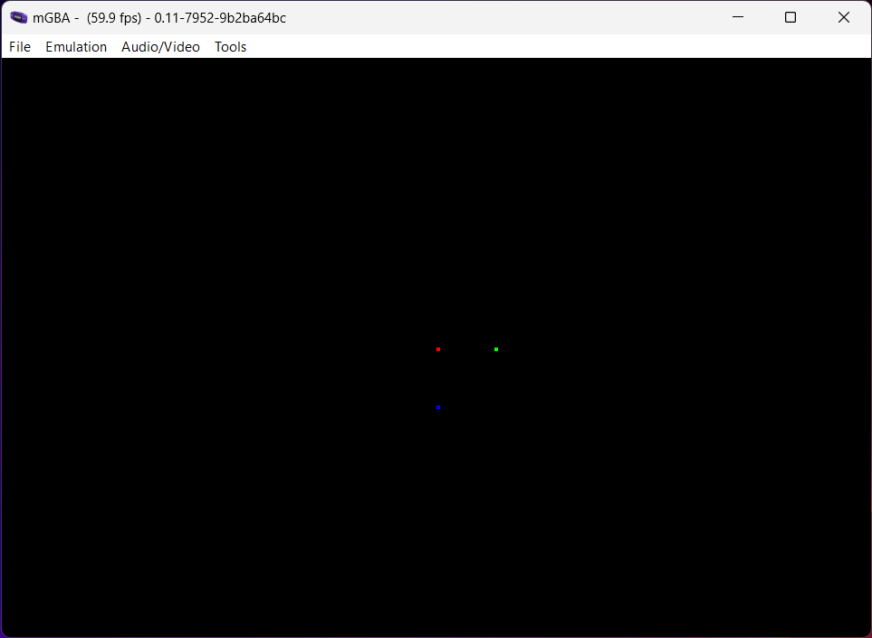

Project Setup
Now that we have everything ready to go, let’s set up meson-gba.
First, navigate your terminal to wherever you like to keep your programming projects.
Then, download meson-gba using git, if you haven’t already done so:
git clone https://github.com/LunarLambda/meson-gba
cd meson-gba
If you type ls -1, you should see the following files:
LICENSE.txt
README.md
book
examples
game
gba.ini
meson
meson.build
subprojects
The game directory is where you will place all your game’s code and files. The meson directory contains files needed for configuring the compiler, and the subprojects directory contains files for all the libraries and programs that meson-gba lets you use.
Finally, you can configure some project settings in meson.build, although this is optional, most of your build code will be in game.
Set up your build directory:
meson setup --cross-file=meson/gba.ini build
If everything goes well, you should see something like this at the end:
gba-meson 0.5.0
Subprojects
sdk-seven : YES
User defined options
Cross files: gba.ini
sdk-seven is the project that provides all the necessary bits for building GBA programs (or ROMs).
Now, you should be able to compile everything:
ninja -C build
If you look inside the build/game directory, you should now see a file called gba-meson-template.gba. Let’s try running it in an emulator:

Success!